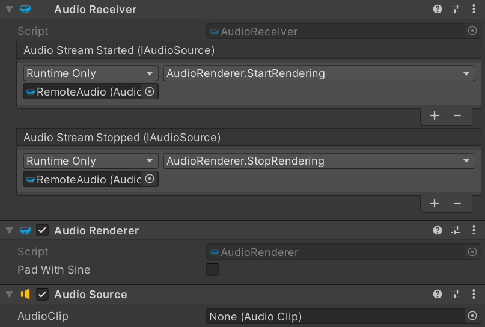

Unity AudioReceiver component
The AudioReceiver Unity component represents a single audio track received from the remote peer through an established peer connection.

The AudioReceiver component in itself does not render the received audio from the remote peer. Instead, it makes that audio available via the IAudioSource interface. To render the remote audio, add an AudioRenderer component and assign the AudioStreamStarted and AudioStreamStopped events to its StartRendering() and StopRendering() methods, respectively.

This will allow the AudioRenderer to tap into the raw audio received from the remote peer, and redirect it to an AudioSource component located on the same GameObject. Note that the AudioSource component does not have any AudioClip assigned; instead the OnAudioFilterRead() callback is used internally by the AudioRenderer to inject the audio data into the AudioSource component, and therefore into the Unity audio DSP pipeline.
Note
When using the C# library of MixedReality-WebRTC, by default remote audio tracks are automatically rendered internally to the default audio device. In Unity, the expectation instead is that all audio shall be played via the Unity DSP pipeline using the above setup. So to prevent duplicate audio playback of remote audio tracks, PeerConnection.InitializePluginAsync() will disable the default internal audio rendering by calling OutputToDevice(false) on all RemoteAudioTrack objects created internally.